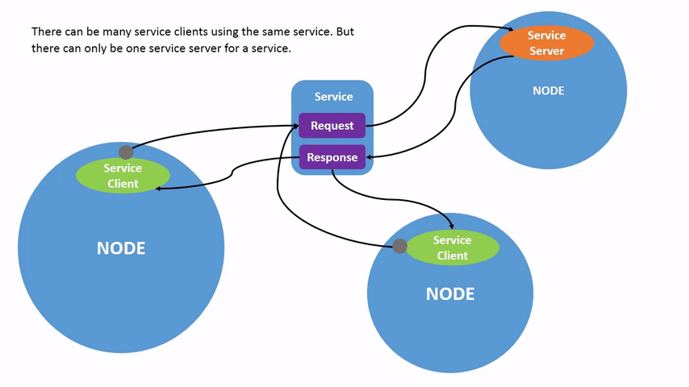

ROS 2 Concepts
ROS 2 consists of packages and manifests:
packagesare the basic organizational unit. They consist of a collection of related files and directories used to organize and manage ROS 2 nodes, libraries, and resources.manifestsdescribe the packages, normally in a file named package.xml, which contains metadata.
ROS basic terms:
| Term | Description |
|---|---|
| Underlying communication layer (DDS) | Provides high-performance, reliable, real-time data communication and integration capabilities, enabling messaging and service invocation between nodes in ROS 2. |
| Node | The smallest unit of processing in ROS. It is typically an executable. Each node can use topics or services to communicate with other nodes. |
| Message | A data structure composed of fields of types such as int, float, and boolean. |
| Topic | A one-way, asynchronous communication mechanism. By publishing to or subscribing from topics, nodes can exchange data. The topic type is determined by the message type. |
| Publishing | Sending data using a message type corresponding to the topic content. |
| Publishers | Nodes that publish messages on topics. |
| Subscribing | Receiving data using the message type corresponding to the topic content. |
| Subscribers | Nodes that receive messages from publishers on topics they subscribe to. |
| Services | A bidirectional, synchronous communication mechanism where a client requests a task and a server responds. |
| Service Servers | A node that takes requests as input and provides responses as output. |
| Service Clients | A node that sends requests and receives responses. |
Packages
It's a bundle of files in a folder which can be reused, kind of like an application or library.
Inside a package, you can have:
- code(Nodes, Topics, Services, etc.)
- needs (dependencies, types, etc.)
- build instructions (CMakeLists.txt, package.xml)
- Extras Like:
- launch files
- parameter files
- custom message types
It's build using ament and colcon through Cmake if written in C++ or setup.py if written in Python. For this class, we will be using Python.
In python language the minimum files in a package are:
- package.xml Meta information, like name, version, programmer, dependencies, etc.
- setup.py installer reipe for colcon, what to include, scripts, etc.
- resource/<package_name> Marker that helps python tools to find the package.
- setup.cfg Shows where your runnable files are located.
- <package_name>/__init__.py the real package folder which will be used to build.
Nodes
A node is the smallest unit of processing in ROS. It is typically an executable. Each node can use topics or services to communicate with other nodes.
It's main characteristics are: - Small program/process - They shoul be for a single purpose - They can either send or receive information - They're written in different languages (C++, Python, etc.) and still work together
They're basically executables therefore the syntax to run them is:
Each robot is composed of multiple nodes, which we will need to monitor and manage. We can list all the nodes running in our system using:
each node will need its own executable running, so at the beginning we will have to open multiple terminals to launch each node.
Topics
Topics are a one-way, asynchronous communication mechanism. By publishing to or subscribing from topics, nodes can exchange data. The topic type is determined by the message type.
- They are the buses between nodes
- They are one-way
- They are asynchronous
- They can be one to many, many to one, many to many
- They dont need to know the node theyre communicating with
- They need to be a specific type of data(i.e. )

To interact with topics nodes can have on of two roles, either as publishers or subscribers.
- Publishers send data to topics
- Subscribers receive data from topics
we can check all the active topics with the command:
and then we can check the type of each topic by adding the-t flag, to the endof the command.
We can also check the data being transmitted in a topic using:
As explained before topics can be many to many, one to many, many to one, etc. To check how many publishers and subscribers are connected to a topic we can use:Topics can also have types, which is how they are encoded and everyone must agree with the format to be able to communicate. We can either use built-in types or create custom ones. Common built-in types are: - std_msgs(strings, integers, booleans, etc.) - geometry_msgs(poses, transforms, velocities, etc.) - sensor_msgs(images, IMU, laser scans, etc.) - nav_msgs(odometry, maps, etc.)
Services
Services are another way to communicate between nodes, however instead of being continuous it's a one and done communication.
- They are bidirectional
- They are synchronous
- Not for continuous data streams
- They need a client and server

you can check the available services using:
Services also have types, except that they are in two parts, a request and a response. We can check the type of a service using:
similarly to topics you can uselist, -t, info --verbose, and echo commands to get more information about services. As well as find to search for services of a specific type, and show to display the definition of a service type.
Parameters
Parameters are basically configuration values for a node, in other words setting or variables.
- They are stored
- int
- float
- string
- bool
- list
- Each node has it's own parameters
Common commands for parameters are:
Which prints the value Which sets the value Which dumps all parameters to a yaml file Which loads parameters from a yaml fileActions
They are tasks that require time such as moving. They offer a progress report which you can check and cancel if needed.
THey have three main characteristics: - Goal: what you want to achieve - Feedback: progress report - Result: final outcome(success/failure)

Same as in others we can use list, type, info, show, echo to get more information about actions. As well as send_goal to send a goal to an action server, and cancel_goal to cancel a goal.